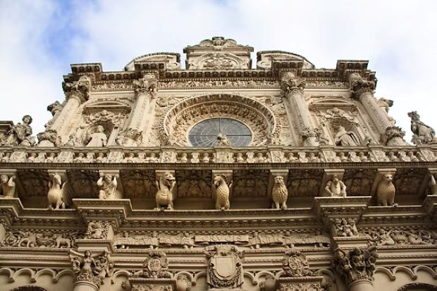

About Us
Lecce's friends of the English language, the Circolo Berkeley, have never followed the straight lines of a roadmap. They stroll through the city's Baroque byways favoring blind alleys that on occasion end in wide-eyed surprise. Born in contradictions, the Circolo has made them thrive. Devoted to the English language, it dared take the name of an Irish bishop with a strong brogue, a Protestant to boot. Furthermore, history had long forgotten his ecclesiastical role and installed him among the great philosophers. His Lecce followers, with a drum beat of their own, chose to see him first of all as one of the early foreign explorers of the Salento, a role that in their meandering way they perpetuate.

Another alumnus of Trinity College, Dublin, Bernard Hickey, lent his energy to launching the Circolo. Hilda Coppola, born, suspiciously, Caffery, led volunteers in support. But here again anomaly reigns, and it would be wrong to see Irishism at work. (The Oxford Dictionary defines this harmless -ism cruelly, forgetting the fun, "A statement which is manifestly self-contradictory or inconsistent.") Hilda in fact hailed from Yorkshire on the larger off-shore island and Bernard was an Australian. The Circolo has always echoed to sounds of English from the seven continents, including that of valiant Italians dragooned into instructing the barbarians. George Berkeley, a proud proponent of 18th Century rationalism, made important contributions to philosophy, theology, psychology, optics, physics and mathematics.